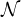

A method for representing a spanning tree on the complete graph on vertices {1,…,n} as a string of n - 2 numbers was presented in class. Find the trees with 8 vertices corresponding to the following strings:
-
856143.
-
341432.
-
432544.
Show that
Which formulation do you think is most effective for solving max{cTx : x ∈ S}? Why? How do the feasible regions of the LP relaxations compare?
Assume that we have a polynomial time algorithm for computing the number of nodes of the largest node packing for any graph G = (V,E). This algorithm will tell us the number of nodes in the optimal packing but it will not tell us the nodes that are used in the optimal packing. Prove that we can use this algorithm as a subroutine in a polynomial time algorithm for finding the nodes in the largest node packing. Be careful with your description of how you proceed in each case in your algorithm.
Using the Hamiltonian path problem, or otherwise, show that the following problem is P-complete.
Given a graph G = (V,E) and a set L ⊆ V , is there a spanning tree T of G such that the set of leaves is L?
(A leaf of a tree is a vertex of degree 1. The Hamiltonian path problem is: Given a graph G = (V,E), does
there exist a path which visits all the vertices of G exactly once? You may assume that the Hamiltonian path
problem is  -complete.)
-complete.)
Let S be the set of feasible solutions to the integer programming problem
What is the Chvatal rank of the valid inequality 3x1 + x2 ≤ 12?